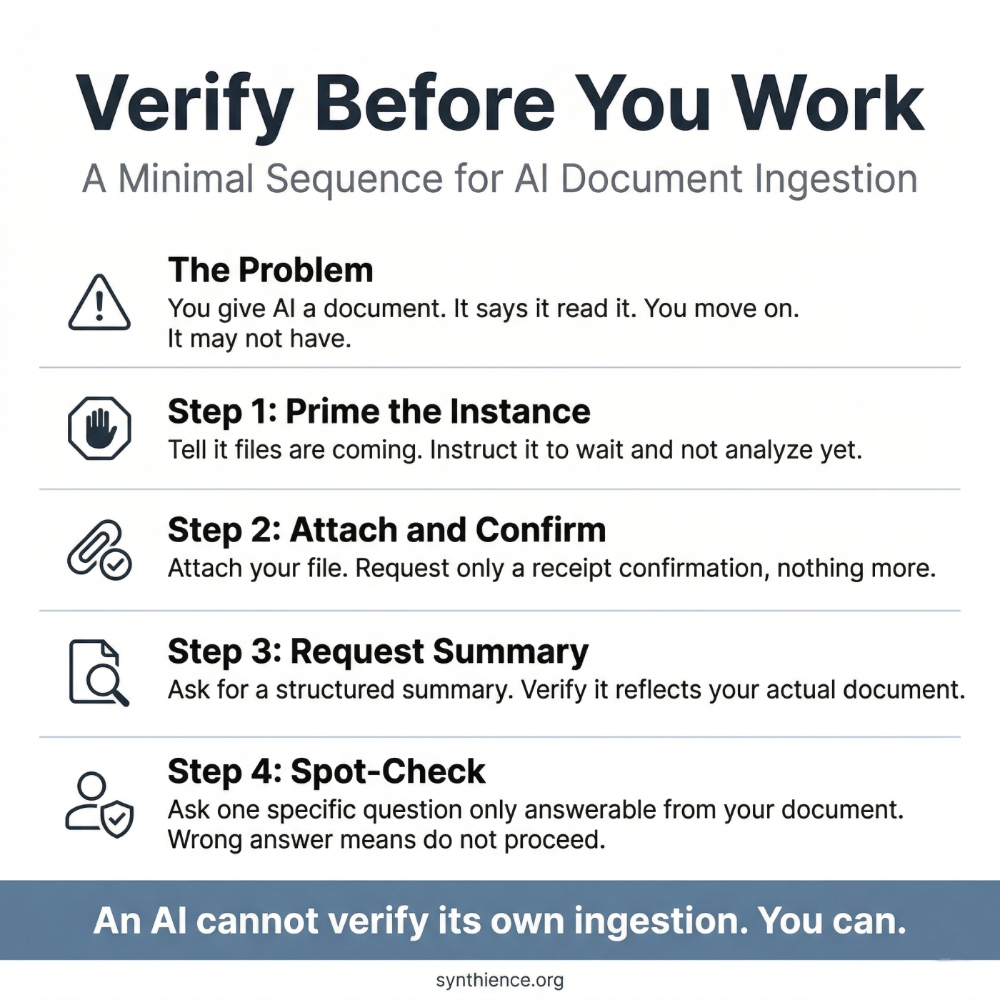

AI-Assisted Editing Without Silent Loss
A practitioner guide for safe human-AI document editing

Why this guide exists
AI systems are extremely fluent editors. They are not reliable custodians of completeness.
When used to edit complex documents, AI systems routinely:
- Drop sections without signaling it
- Remove constraints while "simplifying"
- Reorder material in ways that break dependencies
- Replace specificity with smoother but weaker language
Humans often fail to detect this loss because the revised text sounds good, familiar content "feels" intact, cognitive load is already high, and trust increases with fluency.
This guide defines a human-in-the-loop procedure that allows you to use AI for editing without losing things you did not intend to lose.
The core failure mode: silent loss
Silent loss occurs when content is removed or weakened, the human does not notice, and the loss is discovered only much later -- or never.
This is not a rare edge case. It is a structural interaction failure between humans and fluent AI systems.
When you must use this procedure
Use this procedure if any of the following are true:
- The document is long or multi-section
- The document encodes structure, rules, scope, or constraints
- The document represents institutional memory
- Reconstructing lost content would be costly
- You are asking the AI to rewrite, reorganize, clean up, simplify, merge sections, or produce a full replacement
If losing something would matter later, do not skip this.
The safe editing pattern
This method uses two explicit passes:
- Edit Pass -- AI produces a full revised document
- Verification Pass -- AI performs a strict diff against the original
The human remains the final authority at all times.
Step-by-step procedure
Step 1 -- Preserve the original
Before involving AI, save the complete original document and treat it as immutable. Do not rely on memory or excerpts. If the original is lost, verification becomes impossible.
Step 2 -- Edit Pass (full replacement only)
Provide the AI with the entire document. Instruct it to produce a complete revised version, not partial edits.
Avoid piecemeal edits, "just rewrite this part" instructions, and trusting the AI to preserve structure implicitly.
Step 3 -- Freeze the revised version
Once the AI returns the revised document, do not mentally merge it with the original. Treat it as a separate artifact and assume nothing about completeness yet.
Step 4 -- Verification Pass (diff only)
Provide both documents to the AI -- the original unchanged and the revised version -- with a non-editing instruction.
This step is analysis, not editing. The instructions must make that distinction explicit or the AI will drift back into editing mode.
Step 5 -- Require a structured diff report
The AI must report differences in a checkable structure, not prose reassurance. Minimum acceptable format:
If the AI cannot produce this clearly, repeat the step. Prose reassurance ("everything looks complete") is not a valid diff report.
Step 6 -- Human decision
The human reviews the diff and decides to accept the revision, reject it, or request a corrected edit pass. The AI does not decide what is acceptable.
Key rules
- Never rely on "it looks the same"
- Never trust reassurance without a diff
- Never allow "streamlining" without verification
- Never skip the verification pass for important documents
This procedure trades speed for integrity and control -- intentionally.
What this procedure protects
Following this method protects against silent section deletion, constraint erosion, accidental scope expansion or contraction, institutional memory loss, and over-trust in fluent AI output. It also reduces cognitive load by externalizing verification.
What this procedure does not do
This method does not detect subtle semantic weakening automatically, judge whether changes are good or bad, replace human judgment, or guarantee correctness of content. It guarantees completeness awareness, not correctness.
When in doubt
If you are unsure whether to use this procedure, use it. The cost of verification is small. The cost of silent loss is cumulative and often invisible.
Five guides covering the foundational skills for working reliably with any AI system.
- PG-001: How to Work Reliably With Conversational AI Over Time
- PG-002: AI-Assisted Editing Without Silent Loss (this guide)
- PG-003: Verify Before You Work
- PG-004: You Are Accepting the First Adequate Answer
- PG-005: Your AI Updated the File. Did It Preserve What It Didn’t Touch?
Further reading
The silent loss failure mode described here is a specific instance of a broader class of interaction failures that occur when AI systems are trusted to preserve fidelity across extended or complex tasks. For the formal treatment of document ingestion and retention verification, see SF0038: Ingestion Verification Protocol (IVP). For understanding how context representation degrades during long interactions and how to detect it, see SF0039: Context Representation Drift (CRD).
Full framework documentation available at the Synthience Institute community on Zenodo.